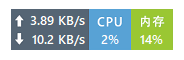
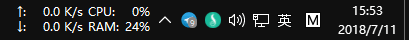
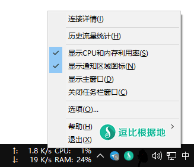
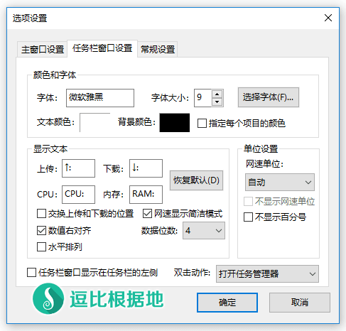
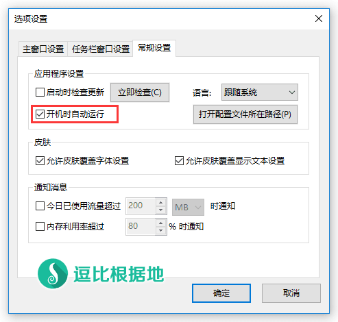

应该很多人想要在不打开 任务管理器 的情况下查看实时网速、CPU及内存等信息吧。
然而很多人都是通过国产毒瘤安全软件实现这个功能，所以我就分享个我在使用的任务栏监控软件：TrafficMonitor！
主要特性
Traffic Monitor 是一款用于Windows平台的网速监控悬浮窗软件，可以显示当前网速、CPU及内存利用率，支持嵌入到任务栏显示，支持更换皮肤、历史流量统计等功能。
- 显示当前实时网速、CPU和内存使用率
- 多个网卡时，支持自动和手动选择网络连接
- 查看网络详细信息
- 支持 任务栏显示
- 支持更换皮肤和自定义皮肤
- 历史流量统计
Github 项目地址：https://github.com/zhongyang219/TrafficMonitor
截图
这个软件分为两种显示方式，分别为：悬浮窗口、任务栏窗口。

前者我觉得就这个简洁多彩的好看点，其他的就...（更多的请看Github 截图）。下图是我使用的任务栏方式截图的。

下载地址
Github 下载地址：https://github.com/zhongyang219/TrafficMonitor/releases/latest
百度网盘 下载地址（官方）：https://pan.baidu.com/s/1c1LkPQ4
Github 下载时，XP 系统请选择：TrafficMonitor_V X.XX_forXP.7z，
其他系统均选择：TrafficMonitor_V X.XX.7z。
下载之后直接解压即可。
使用方法
使用方法主要介绍 任务栏配置 方面。
下载解压到任意目录后，进入 TrafficMonitor 文件夹，双击打开 TrafficMonitor.exe 程序。
就会显示个悬浮窗口，右键菜单 - 勾选 显示任务栏窗口 - 取消勾选 显示主窗口，然后就会看到如下显示：

接着，右键菜单点击 [选项]，在弹出的 [选项窗口] 中可以配置任务栏窗口中的显示设置。
比如我就是如下图所示配置的：

建议在 [选项设置]窗口 - 常规设置 中勾选 开机时自动运行。

转载请超链接注明：逗比根据地 » 推荐一个支持任务栏显示 实时网速、CPU及内存 的监控软件 —— TrafficMonitor
责任声明：本站一切资源仅用作交流学习，请勿用作商业或违法行为！如造成任何后果，本站概不负责！


正常情况下顶多几十MB内存占用，你尝试更换协议、混淆什么的看看有没有影响。
当你的电脑是工作状态时，系统会自动缓存到内存中，下次打开更快。
而当你电脑空闲一段时间后，系统就会自动释放不必要的缓存内存。